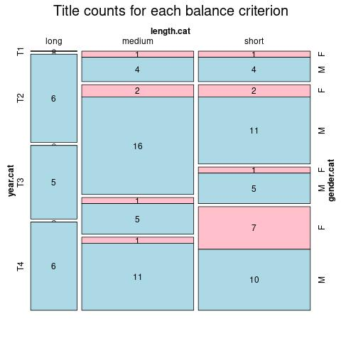

Towards Modeling the European Novel. Introducing ELTeC for Multilingual and Pluricultural Distant Reading
This contribution reports on the collaborative effort of building an open access multilingual corpus of European novels published 1840-1920 (the European Literary Text Collection - ELTeC) within the COST Action “Distant Reading”.[1]
Working at the intersection of many languages and cultures, we address practical and technical aspects of corpus design based on a theoretical discussion of pluri-cultural computational modeling of literature. In the corpus design, we adopt a metadata-based approach that allows for representing the diversity of novels published 1840-1920 across Europe. Our sampling and balancing criteria use metadata including publication date, text length, reprint counts and authors’ gender,[2] and we deliberately focus on inclusion of non-canonical novels.
We have built a workflow for systematically sampling and encoding novels as well as a consistent annotation model of data and metadata (cf. Burnard, Schöch, Odebrecht, 2019). Currently, ELTeC constitutes a dynamic intersection of fictional discourse in fourteen languages, including Czech, English, French, German, Greek, Hungarian, Italian, Norwegian, Polish, Portuguese, Romanian, Serbian, Slovenian, and Spanish (ca. 600 text candidates amounting to ca. 52 mio. words).[3] Figure 1 depicts the current state of the Portuguese sample, across categories “text length” (long, medium, short), “gender” (female, male), and “date slot” (T1-4; https://distantreading.github.io/ELTeC/por/index.html).
Figure 1. Screenshot of Portuguese sample
Our TEI-XML (TEI Consortium, 2019) encoding scheme aims is minimal, but aims at facilitating a rich and well-informed distant reading. ELTeC is rooted in the open data movement, with collaborative data creation and an open access extensive documentation for (meta-)data schema, decisions and workflows.[4] Each version of ELTeC is archived via Zenodo.[5] Thus, our (meta)data are re-usable, interoperable, accessible and findable (cf. FAIR Guiding Principles; Wilkinson et al., 2016).
In view of the problematic notion of “representativeness” (see Biber, 1993), ELTeC deliberately refrains from modeling the statistical distribution of populations of publication or reception (cf. Herrmann & Lauer, 2019). Rather, we address the inevitable bias included in the sampling (see Bode, 2018), as well as the explicit link to research questions (Underwood, 2019; Lüdeling, 2011) and the act of construction (Piper, 2019).
ELTeC caters to the computational modeling of literature at the intersection of cultures, nations, languages, genders, but also poetologies, trends, and traditions, in a historical period of extreme aesthetic change and diversity. Giving one example, in collaboration with other working groups, using demonym and named entity recognition, it is possible to comparatively explore images of ‘the other’ (ethnic, national, regional; Leerssen, 2016). Generally, in the creation of ELTeC we aim at inductively defining what a ‘novel’ is, allowing for diverse approaches in literary theory and history to be explored and tested.
The research described in this paper was conducted in the context of the COST Action "Distant Reading for European Literary History" (CA16204 - "Distant-Reading"). Find out more at: http://www.distant-reading.net. COST is funded by the Horizon 2020 Framework Programme of the EU.
References
Biber, D. (1993). Representativeness in Corpus Design. Literary and Linguistic Computing (8), 243–257.
Bode, K. (2018). A World of Fiction: Digital Collections and the Future of Literary History. University of Michigan Press.
Burnard, L., Schöch, C., & Odebrecht, C. (2019). In search of comity: TEI for distant reading. Book of Abstracts TEI Conference Graz 2019. http://gams.uni-graz.at/context:tei2019
Herrmann, J. B., & Lauer, G. (2018). Korpusliteraturwissenschaft. Zur Konzeption und Praxis am Beispiel eines Korpus zur literarischen Moderne. Osnabrücker Beiträge Zur Sprachtheorie (OBST), 92, 127–156.
Leerssen, J. (2016). Imagology: On using ethnicity to make sense of the world. Iberic@l, Revue d'études ibériques et ibéro-américaines, 10, 13-31. http://iberical.paris-sorbonne.fr/wp-content/uploads/2017/02/Pages-from-Iberic@l-no10-automne-2016-Final-2.pdf
Lüdeling, A. (2011). Corpora in Linguistics: Sampling and Annotation. In K. Grandin (ed.), Going Digital. Nobel Symposium, 147, (220–243). New York: Science History Publications.
Piper, A. (2017). Think Small: On Literary Modeling. PMLA, 132(3), 651–658. https://doi.org/10.1632/pmla.2017.132.3.651
TEI Consortium (eds). TEI P5: Guidelines for Electronic Text Encoding and Interchange. Version 3.6.0. [2019]. http://www.tei-c.org/Guidelines/P5/ (2019-09-25).
Underwood, T. (2019). Distant horizons: Digital evidence and literary change. Chicago: University of Chicago Press.
[1] https://www.distant-reading.net/
[2] See our white paper on https://distantreading.github.io/sampling_proposal.pdf
[3] Current state of ELTeC: https://distantreading.github.io/ELTeC/index.html
[4] Corpus data: https://github.com/COST-ELTeC, documentation: https://github.com/distantreading/WG1
[5] https://zenodo.org/communities/eltec